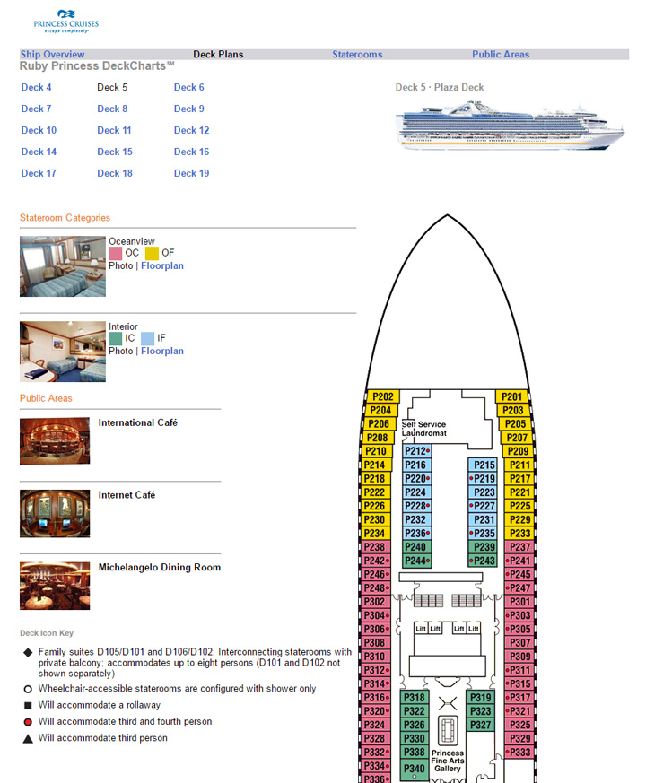
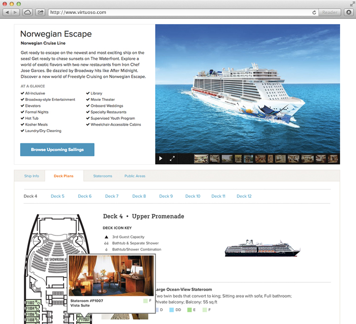

<div class="content-wrapper clearfix">

    <article class="content">

        <div class="row clearfix">
            <div class="col span_6 center">
                 <h1 class="detail">Cruise Ship Migration</h1>
                 <h2 class="tagline">Existing cruise ship pages were disconnected, dated, and lacked helpful content.</h2>
            
            </div>
        </div>
    
        
        <div class="row clearfix">
             <div class="empty col span_1"></div>
             <div class="col span_2">
                <h2>Users</h2>
                <p>Travel advisors and consumers researching cruises on our website</p>
            </div>
            <div class="col span_2">
                <h2>User's Goal</h2>
                <p>Find the key features of the ship and find sailings available on the vessel</p>
            </div>
            <div class="empty col span_1"></div>
        </div>
        
        <hr><br>


        
       <div class="row clearfix">
           <div class="col span_4 left less-space">
            
                <div class="caption">Before</div>
        
           </div>
           
            
       <div class="col span_2">
            <h2>Existing Design</h2>
                <ul class="content ul bullets">
                    <li>This page appeared as a modal showing content from an external site.</li>
                    <li>Look and feel is very disconnected from the main website.</li>
                    <li>Navigation text has low contrast against background color.</li>
                    <li>Design is dated, lacks proper spacing and places the legend at the bottom of the page, which on larger ships, puts it out of sight.</li>
                </ul>
            </div>
         </div>
        
    <div class="row clearfix">    
        <div class="col span_4 left">
         
               <div class="caption">After</div>
        </div>
 
        
    <div class="col span_2">
            <h2>New Design</h2>
                <ul class="content ul bullets">
                    <li>After reviewing multiple leading cruise line sites, plus cruise search sites, I compiled a competitive analysis of key features advertised for ships.</li>
                    <li>A new top section shows large photos, and highlights key features from each ship for helpful at-a-glance information.</li>
                    <li>I worked with developers to incorporate the data into our site so users can see all content at once.</li>
                    <li>A new call-to-action leads users to upcoming sailings on the ship.</li>
                    <li>Legend is moved up on the page to be easily referenced while scanning the ship map.</li>
                    <li>Look and feel is modernized.</li>
                </ul>
        </div>
        
    <div class="col span_6 left">            
                <h2>My Role</h2>
                <ul>
                    <li>Competitive Analysis</li>
                    <li>UI & Visual Design</li>
                    <li>Prototypes</li>
                </ul>
            </div>
         </div>    
       </div>
    </article>
</div>
